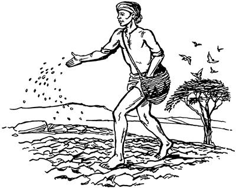
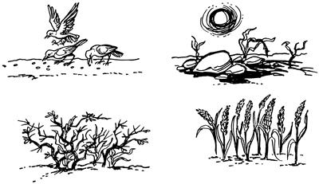
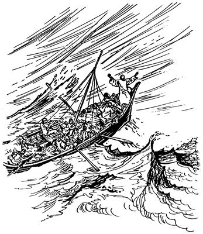

Yesusti sunumna yubu wana yamoropne sembe ambatsiogha
(Matius 13:1-23; Lukas 8:4-15)
4
1 Yesusti nen Galilea mag sin abolag piogti, alniro yubu ambarelamsiog. Ambarelamsiogpa, nimi maikno sirik longowarekaekpa, el mag alip toman pirop kabong nhonag pulingkiog. Kabong lomag pulingkiogti, “Nimiri na tiboganeikpa, yubu ambatsinun,” aro mag alibag olog ko'oro piogpa, nimi maikno taneko mag abolag sekamek. 2 Sekamekpa, Yesusti likiptop yubu agha tam maikno sembe sunumna ambarelamsiog.Ambarelamsiogne undo eldi sikin ambarelamsiog:
3 “Ka'eamlulom! Nari ambatsinenge wali uro seneraglamlulom! Awe weropne nhondi so'oag wana togtoba maikno yamoro toghol palamog.

4 Yamoro toglamogba, wana nenne inaag timbaog. Inaag timbaogpa, winang yingkina wana togna toghogha taneko ni toro teek.5 Wana nenne babe so'o ologhag kirik phalag timbaog. Anekoag timbaogti, so'o ologhari wana togna toghogha aneko elemag pongo saelbaog.6 Pongo saelbaog aghana kirik phalag so'o ologhari, yareng weag wa'in kom. Ane sembe heng waelbaogti, bobori pongoraba taneko elemag halo aro ul taog.7 Nenne babe pongoroba alog aba nusamag timbaogti, pongkaog aghana, alog aba tanekori niknibaogpa, aweag toghogne neneko wana mauamog kom.8 Aghana nenne babe so'o mesaag sukuptobag timbaog. So'o mesaag ingkiogne wali uro pongkaogti, wana mauamog. Pongkaogti, yo'o nenneri wana teng nhon, nenneri wana teng phende, nenneri wana teng tombare maubaog,” seog.
9 Seogti, Yesusti ambarelamsiogti, “Aori ka'ebalom sunumna nene nimi niri wali uro seneragto saelbamlulom,” seog.
10 Seogti, el mo wamogpa, eldi yubu ka'ero neleptopnang aobare abenekoap, yog nimi elap wamek nimiap Elag hailaek. Sindi Yesusag hailamekti, “Likiptop yubuag agha sunumna etpare sunuro ambatsilamne neneko, tam huropne sembe ambatsilam,” aro haibaek. 11 Haibaekpa, eldi ambarelamsiogti, “Amik Allahri so'oag nimi maikno saelbamsilul. Allahri nimi maikno saelbamsilula welaro wamlulne sembe samenag tognoro wamog. Tognoro wamog aghana, na wene a'un sembe lag phoro ambarelamsin. Aghana sin nanag sikne aro seneragtop kom nimi sembe likiptop yubuag agha ni ambarelamsin. 12 Samenag Allah yubu silimu tiptop nimi nhondi sik uro yabilulne sembe mome toro pibog. Eldi Allah yubu tipto mome toro pibognena,
‘Wanaag agha ka'ebahengdi, seneragsengdi, Allahag samoro yaheng tanena,
Allahri sindi malia uropne tam orog nenero wailag nembaho.
Aghana, sindi sop-sop “Kembahane,” aro haingdi kemelamukang aghana,
wanaag agha ibaukang kom.
Aori ka'elamukang aghana,
wanaag agha seneraghukang kom,’
aro mome toro pibog. Ane sembe nari sin undop saog nimiag likiptop yubuag agha sunumna sunuro ambarlamsin,” seog.
13 Wene seogti, Yesusti nen eldi yubu ka'ero neleptopnang ambarelamsiogti, “A'un sunumna wana yamoro togtoba sembe seneragnep kom tanena, sunumna orange ambatsinenge babe welaro seneraglulom? 14 Sunumna aneko tibin nembahinun:
Wana aweag yamoro togtopne poneko Allah yubu walinge ambatto poa tongohirop nimi sembe lemna. 15 Wana toglamnaba, inaag yingkirop sennena, Allah yubu ka'erop nimi sembe lemna. Allah yubu ambatto poa tongohirop nimiri ambatsirop yubu ene nimi eneko ka'erop. Ka'erop aghana, ka'eamna abeneko pere phia sikini nubunge nenekori yingkina nimi wanaag tognange abeneko toltol yingkirop.
16 Wana toglamnaba, kirik phalag yingkirop sennena, Allah yubu ambarelamsinba, ka'ebom agha peket elemag yeng uro senero torop nimi sembe lemna. 17 Elemag yeng uro ka'erop aghana, Allah yubu ambatsirop yubu eneko nimi enekori wanaag yareng pelengka urop komne saog wamla ane sembe, nimi eneko khapto wamnep kom. Nimi enekori Allah yubu sunsunum uro ul piropne sembe ora nimiri seklebalul aro ulamseng to, el luknubaheng to tanena, elem uro Allah yubu sae limnep. Pongoroba yareng pelengka urop komne saog uro, nimi undopne khapto wamnep kom.
18 Wana toglamnaba, pongoroba alog aba nusamag yingkirop sennena, nimi nenne Allah yubu ka'erop nimi sembe lemna. 19 Undop nimi anekona Allah yubu ka'erop aghana, sindi wanaag sop-sop, ‘Wela wamnun,’ aro wana ikin uro seneraglamang. Undo seneraglamangdi, ‘Tup tahaneri, nia ni walinge nari saeag taho,’ senenne sindi wanaag to'op tangtopneri, Allah yubu niknil orop. Niknilamlaba, sindi wanaag kolo orogti, Allah yubu pongoro wana maubanep kom saog wamla.
20 Wana toglamnaba, so'o mesa sukuptobag yingkirop sennena, sin Allah yubu ka'ero wali uro seneragto salerop nimi sembe lemna. Sindi wali uro Allah yubu saelbanne agha sindi wanaag Allah yubu pongoro wana maiknoro mauamla. Nenneri wana teng nhon maurop, nenneri wana teng phende maurop, nenneri teng tombare maurop saog uro sindi wanaag wamla,” aro Yesusti tibin nenero ambatsiog.

Yesusti sunumna whea sembe lebogha
21 Seogti, Yesusti likiptop yubuag sunumna nhon babe ambarelamsiogti, “Nimiri whea timbom agha auk pok kau mombolag niknirop te? Kombagha tanena, auk pog ae usa mamneba mombolag tognorop te? Kom! Nimiri whea timbom agha ‘Eptobag wareamlul,’ aro laghag ikto pairop. 22 Allahri samenag salag lebogne whea saog uro wamla. Allahri yubu lebogne ‘Ya'ag tognoro wamlul,’ aro lebog kom. Nia tognoro wamlange, ‘Lag taleba, el taukang,’ aro lebog. 23 Nari yubu lelamnange aori ka'ebalomne nene nimi niri wali uro seneragto saelbamlulom,” seog.
24 Seogti, Yesusti nen tipto lelamogti, “Nari ambarelamsinne wene ka'elamlomdi, wali uro seneraglamlulom! A'undi ka'elamlom yubu nene sunuro seneraglamlomne sunsunum uro Allahri babe sae sumbi agha a'un tatsilul. Abeneog kom aghana, nen phelekto tatsilul. 25 Nimi etneri, ‘Na olog ka'eamnari, seneragna aghana, wali uro el tahane,’ senelamle tanena, Allahri elag ma'aro tatlul. Aghana nimi etneri, ‘Olog seneragnep komdi, limnun,’ senelamle tanena, seneragna ologha elag wamlange babe kom talul,” seog.
Yesusti sunumna wana pongoropne sembe lebogha
26 Yesusti nen yubu lelamogti, “Amik Allahri mog so'oag nimi maikno saelbamsilul. Mog so'oag nimi saelbamsilulne nenena, nimi nhondi wana togna togtoba aweag meropne saog uro wamla. 27 Wana aweag toghi agha, inipnag mamnep. Kweleknag puknep. Mabom pukom alamnaba, wana togtoba taneko pongoro nubu tanep. Mabom pukom alamnari kemelamnaba, nubu tangtop aghana, pongoroba ane welaro pongorop anena, nimi togna merop nimi enekona ekon. 28 Wana so'oag wamlange mo pongorop. Mo pongoro towalengkandi, yo'o waelban tanena, es uandi, wana maurop. 29 Wana maubandi, whi tan tanena, ngainge poneko imnari, ‘Yongorop li yan tanena tagnun,’ sembanep,” aro sunumna Allahri mog so'oag nimi saelbamsilulne sembe Yesusti likiptop yubu ambatsiog.
Yesusti kwarang si saogne sembe sunumna lebogha
(Matius 13:31-32,34; Lukas 13:18-19)
30 Seogti, Yesusti nen lelamogti, “Allahri mog so'oag nimi maikno saelbamsilne nubu tangkamlulne ane huropneag agha sunuro ambatsinep? Tam huropneag agha a'unag tibin nenero sumbatsinun? 31 Allahri amik ma'arop nimi maikno saelbahilulne nenekona, kwarang si so'oag togtopne saog uro wamla. Kwarang si nene sik uro olog sirik. 32 Nimiri kwarang si olog sirikne nene toro eldi aweag memna tanena, pongoro meroba nenne memnange anabiag agha, el agha alikin sirik uro pongoro waelbanep. Pongoro waelbandi, sae la'imbanba, winangdi kal sae tanekoag ae solanep,” aro sunuro ambatsiog.
33-34 Sunumna undo saogne maikno likiptop yubuag agha ambarelamsiog. Likiptop kom yubuag agha nimi maikno whingag ambarelamsiog kom. Ambarelamsiog yubu enena, nimiri wanaag seneragnepne sunsunum uro ambarelamsiog. Ambarelamsiog aghana, nimi maikno lambaekpa, Yesusap eldi yubu ka'ero neleptopnangap mo wamekti, likiptop yubu ambatsiog yubu eneko ni tibin nenero ambarelamsiog.
Yesusti khao aingnibaogha
(Matius 8:23-27; Lukas 8:22-25)
35 Sumeneko ae sin taogpa, Yesusti el neleptopnangag yubu lelamogti, “Yahut! Nun mag sin tara sip kauro pukapti,” seog. 36 Seogti, eldi yubu ka'ero neleptopnangap kabong nhonag wa'iek. Wa'iekpa, yog nimi babe, “Nhon pukap,” aro sindi kabong etpare lomag wa'iekpa, nimi mag abolag wamekne taneko laplobi agha, “Mag kauro tara sip pukap,” aro mag alip toman piek. 37 Palamekag abeneko, khao nubunge alniro ulamogti, mag kola'epto yalamogti, kabongag sibil alamog. Sibil alamogpa, mag saplukto kabongag wa'alamogpa, kabong anekoag mag teknebanep saog ulamog. 38 Undo unulamogpa, Yesus kabong pomaghag sip wamogha usog eptoba alibag malamog. Malamogpa, eldi yubu ka'ero neleptopnangdi kamolamekti, “Nai! Yubu ambatsiropne! Magti nu olamsilba, tebabeagti, an log semban koma mo malamlam, te?” seek.
39 Seekpa, Yesus pukogti, khao anekoag walamogti, mag kola'epto yalamogne anekoag, “Angnibae! Paplobe!” aro irikaog. Wene seogpa, khao aneko angnibaogpa, mu ana nubunge ni aneko paplobog.

40 Paplobogpa, Yesusti eldi yubu ka'ero neleptopnangag yubu lelamogti, “Sa'a sembe a'un log senelamlom? Sa'a sembe a'undi nanag ‘Sikne,’ aro seneraglamnelom kom?” seog.
41 Undo unuaogpa, sin log lelem, “Yaghe, mane agha ual,” sembaek. Sembaekti, sin mamun hail talamekti, “Nimi enena etne? Khaoap nubu mag longoropneap eldi aruksirop yubu leplange ka'ebarangdi angnibarang,” alamek.